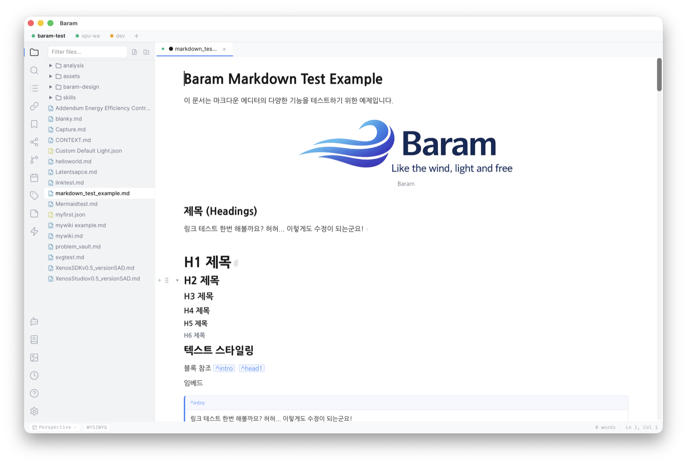
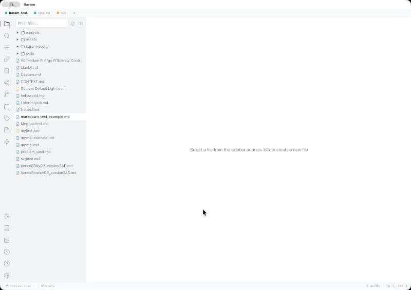

Disappearing syntax
Markdown delimiters show only when your cursor enters the range — and vanish when you leave. What remains is beautifully styled text.
A lightweight, beautiful WYSIWYG markdown editor with AI integration — syntax disappears as you type, and your files stay 100% standard markdown.

Markdown delimiters show only when your cursor enters the range — and vanish when you leave. What remains is beautifully styled text.
MD → editor → MD preserves your document exactly. 100% standard markdown — no proprietary format, no lock-in.
Inline AI edits (Cmd+J), Ghost Text autocomplete, and AI chat — powered by Claude, OpenAI, Gemini, or local Ollama.
[[links]] with autocomplete, backlinks, block references, tags — and a visual graph of your knowledge.
KaTeX math, code blocks with highlighting for 14+ languages, Mermaid diagrams, and advanced tables with cell merge.
Open multiple vaults and folders side by side — each with its own tree, tabs, settings, journal, and Zettelkasten space.
Install community plugins from a built-in, capability-gated marketplace — or build your own with the plugin API.
~10MB binary, instant startup, low memory. A desktop app that feels like the wind.
Syntax melts away as you type — watch Baram in action.

| Action | macOS | Windows / Linux |
|---|---|---|
| Quick Switcher | Cmd+K | Ctrl+K |
| Command Palette | Cmd+P | Ctrl+P |
| Inline AI Edit | Cmd+J | Ctrl+J |
| Source Mode | Cmd+/ | Ctrl+/ |
| Save | Cmd+S | Ctrl+S |
| Find | Cmd+F | Ctrl+F |
| Bold | Cmd+B | Ctrl+B |
| Toggle Fold | Cmd+Shift+[ | Ctrl+Shift+[ |
| Export | Cmd+Shift+E | Ctrl+Shift+E |
| Settings | Cmd+, | Ctrl+, |
Browse community plugins in the built-in, capability-gated marketplace — themes, tools, and editor extensions installed in one click. Want to build your own? Start with the development guide.
Baram(바람) is a lightweight desktop WYSIWYG markdown editor built with Tauri 2.0, React, and Tiptap/ProseMirror. It combines Typora-style "disappearing syntax" WYSIWYG editing with bidirectional links and AI-powered writing assistance.
Baram runs on macOS (Apple Silicon and Intel), Windows (x64 and ARM), and Linux (x64).
Yes. Baram is free and open source software, licensed under the Apache License 2.0.
Yes. Baram's core principle is lossless roundtrip fidelity — when you open a markdown file, edit it, and save it, your content is preserved exactly. No proprietary format, no hidden database. When you use layout features such as table column resizing or diagram sizing, Baram stores that metadata as plain, visible markdown comments right in the file — standard markdown that other editors simply ignore.
Yes. Open Settings > Keybindings to see all shortcuts organized by category. Click Edit on any shortcut, press the new key combination, and click Apply.
Baram currently supports English and Korean for the entire user interface — menus, dialogs, settings, and all UI elements.